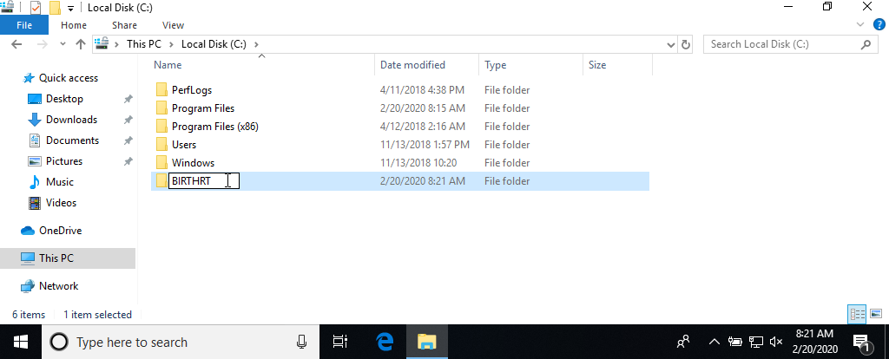
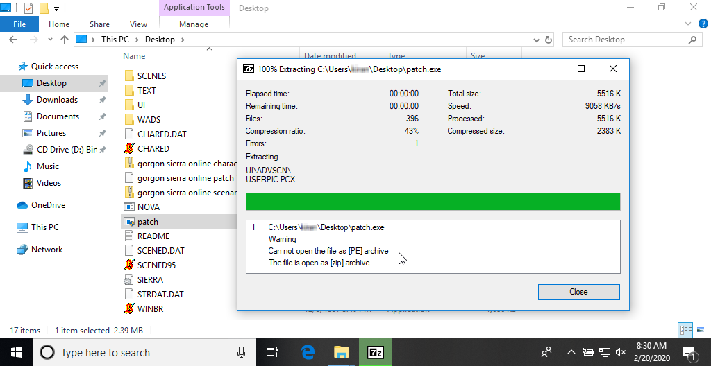
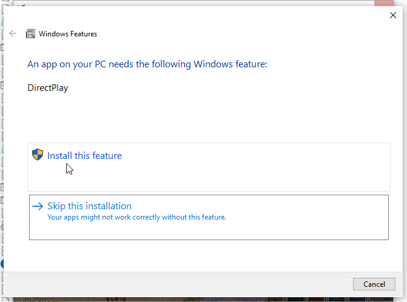
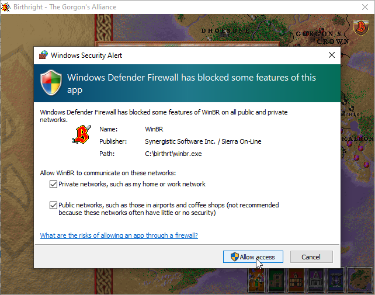
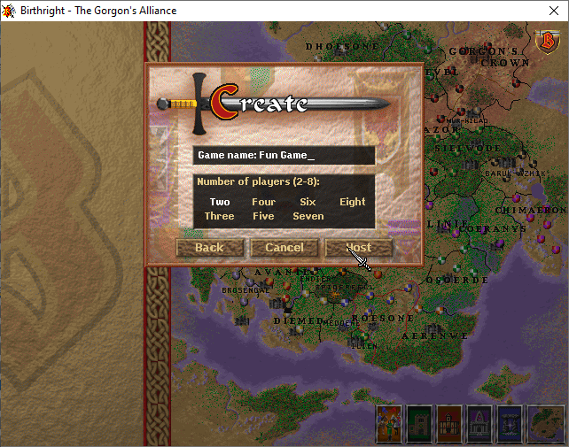
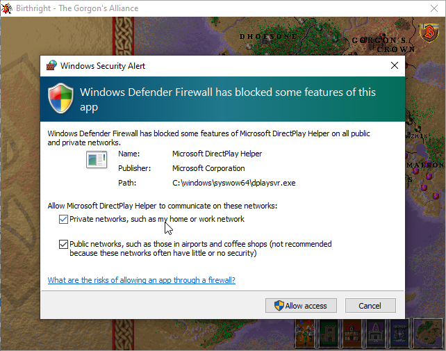
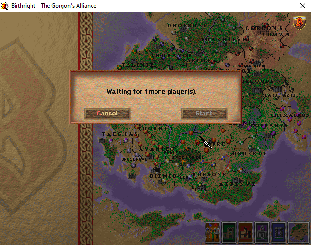
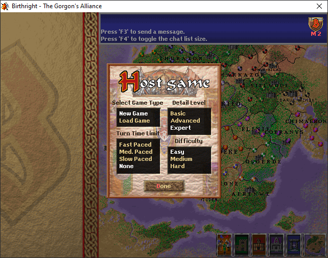
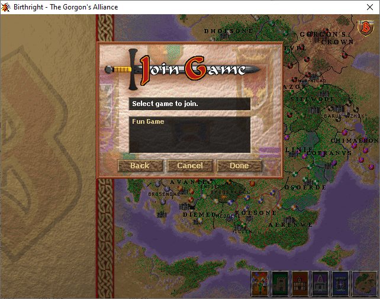
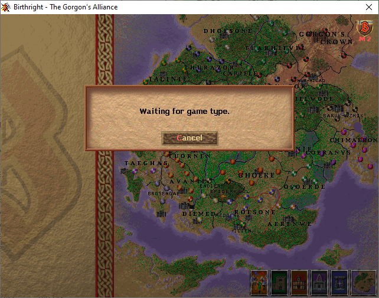

One of the things I find most interesting about desktop support is trying to support legacy hardware and software. Not only does it provide an opportunity to learn more about the history of computing, but it also tends to provide some interesting compatibility challenges.
The place where I run into this most often and that I think gets the most words written about it on the Internet is in getting old games running on modern hardware and operating systems.
Surprisingly, Windows 10 still supports a wide array of classic 16-bit games that one might expect would never run. That includes the title I'm writing about today: Birthright: The Gorgon's Alliance.
Installing the game
Getting the game running in Windows 10 is surprisingly easy. You only need a few things to get started:
- A Birthright: The Gorgon's Alliance CD or an ISO image of the CD.
- 7-zip to extract the game files from the 1.4 patch.
- Patch 1.4 to update the game to the latest version.
- Scenario Editor (optional) to mod the game.
- Character Editor (optional) to mod the game.
- ipxwrapper (optional) for multiplayer.
- Insert the CD into the CD-ROM drive or mount the ISO image of the CD by double-clicking it. 
- Create a folder named BIRTHRT in the root of the C drive.
- Copy all the files from the CD to the BIRTHRT folder.
- Extract the contents of the patch and, if desired, the Scenario Editor and Character Editor.
- patch.exe is an installer file that will not run on Windows 10. Instead, use 7-zip to extract all the files from the executable. 
- You'll likely see a warning that the file could not be opened as a [PE] archive and was opened as a [zip] archive instead. This is fine and doesn't require any action.
- Move the resulting files from the last two steps to the BIRTHRT folder.
- Double click WINBR.EXE to start the game.
- If you included them in the setup, you can also double-click CHARED.EXE or SCENED95.EXE to start the Character Editor or Scenario Editor, respectively.


Multiplayer
Since the game is based on a Dungeons & Dragons setting—a decidedly multiplayer experience—you might be tempted to think that it is fun to play the game with other people. Unfortunately, I've not been able to find anyone to play with, so I can't confirm. If you would like to try it out for yourself, here is how you can get this working on Windows 10.
Birthright's multiplayer component is only available in the Windows version of the game, and not in the DOS version. It also doesn't allow you to play military battles as you would in a single-player game. Instead, it uses quick AI battles. All players will take their turns simultaneously and the NPC domains will get their turns once all players complete their turns.
Since Sierra's servers are no longer active, the only option you have available is playing within your Local Area Network. It is theoretically possible to play using a VPN connection, but there have been complaints about excessive lag on simple LAN connections, so this may not be feasible. The lag on LAN caused some issues starting a multiplayer game occasionally, so I suggest saving often in case the players get disconnected.
- Extract the contents of the latest ipxwrapper release archive into the BIRTHRT folder.
- Double-click the
directplay-win32.regordirectplay-win32.regfile, depending on your system architecture.
- Run
WINBR.EXEand select the Multiplayer option in the main menu. - Select Local Area Network or Modem and click Done. 
- In the Windows Features dialog that comes up, select Install this feature to install DirectPlay. This window may open in the background behind your game, making it look like your game just froze. It may also take some time to install.
- Click the Close button. 
- In the Windows Security Alert dialog, select which networks the game should be allowed to communicate on and then click Allow Access.
This is for theWINBR.EXEexecutable. You'll see another for Windows' DirectPlay feature later. - On the Multiplayer screen, enter your name, select IPX, and click Create. Note: If IPX is not an option, this means that ipxwrapper was not properly setup. 
- Give the game a meaningful name, select the number of players that will be in the game (including yourself), and click Host 
- In the Windows Security Alert dialog, select which networks the game should be allowed to communicate on and then click Allow Access. This is for Windows' DirectPlay feature. You'll see another for Windows' DirectPlay feature later. 
- Wait for the other players to join the game. 
- When all players have joined, select the game options.
- On the Multiplayer screen, enter your name, select IPX, and click Join. Note: If IPX is not an option, this means that ipxwrapper was not properly setup.
- In the Windows Security Alert dialog, select which networks the game should be allowed to communicate on and then click Allow Access. This is for Windows' DirectPlay feature. You'll see another for Windows' DirectPlay feature later. 
- The game host should provide you with the name of the game. It may take a few moments for the game to list the available games. Once it appears, select the game and click Join 
- Once all players have joined and the host configures the game settings, you should be presented with the domain selection screen.
On the host computer:
On the joining computer(s):
History
Birthright: The Gorgon's Alliance is a PC game released for both Windows and MS-DOS in 1997. It was developed by Synergistic Software, a division of Sierra On-Line, who also developed the Hellfire expansion for Blizzard's Diablo the same year.
The game is an adaptation of the Birthright campaign setting for the Advanced Dungeons and Dragons line. In the campaign setting, players can become rulers of nations imbued with some of the divine power released when their gods fought a great battle and were destroyed.
The PC game is split into three sections, which can be played separately or as part of a larger game. Realm play allows the player to control a nation and the political and economic interests thereof. In Adventure play, the player takes a group of adventurers into dungeons, castles, and dense forests to find items of power or to battle powerful foes. In Battle play, the player can arrange his troops on a real-time battlefield and test his strategy against the computer.
Although I can no longer find references to its planned sequels, any hope of more of the Birthright setting in videogame form was lost when the game was not able to please fans.
Modding the Game
Aside from the Scenario Editor and Character Editor, there are currently no tools for modifying Birthright's assets. Thanks to some digging, by Birthright.net user kasrkraw, there is some information available on the modified Doom engine that Birthright uses to run its adventures.
Compiling the game
In 2018, Al Lowe, the creator of another of my favorite Sierra games (Torin's Passage), sold his archive of old Sierra "junk". This junk included diskettes containing old Sierra source code. A year later, the code for Birthright: The Gorgon's Alliance appeared on the Internet Archive.
I have not been able to successfully compile the game yet, but here are my notes on the process thus far.
The necessary libraries and packages are:
- OpenWatcom 1.9 - The C++ compiler (including the
wmakeutility) used to compile the source. Make sure to runsetenvironment.batto add the necessary include files. - Microsoft DirectX SDK April 2005 - The latest version of the DirectX SDK that seems to include
dpay.h. - Windows 95 SDK - This SDK containes some necessary include files.
It's not necessary to install the two SDKs. You can simply extract the include directories and add them to OpenWatcom's INCLUDE environment variable.
Troubleshooting
failed writing initial conditions file
When I first started testing this setup on a different PC, I ran into an error message after the intro cinematic saying "failed writing initial conditions file". This was caused by the fact that I transferred the files from the CD to my computer using TeraCopy, which marked the files as read-only. To solve this:
- Select all the files in the BIRTHRT folder.
- Right-click the selected files and click Properties.
- Uncheck the Read-only option and click OK.
- Select Apply changes to the selected items, subfolders and files and click OK.

Please insert your Birthright CD

If you have your CD inserted, but you see the error message "Please insert your Birthright CD. Click Cancel to exit.", it likely means that the drive letter of the CD has changed. To fix this:
- Open the file
BRSETUP.CFGin any text editor. - Change the letter beneath the text
[CD]to the drive letter of the CD.

If you have any corrections or helpful tips, please leave them in the comments below.